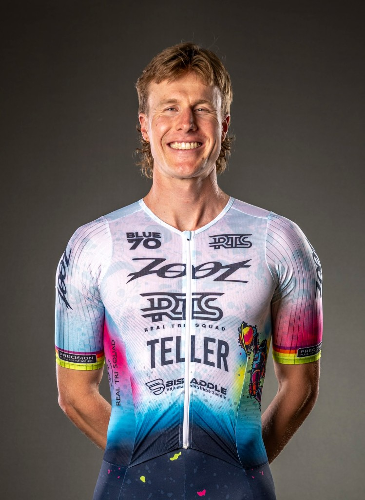

Tinman Elite
Assistant Brand Manager (contract): produced and managed short films, reels, podcasts, and social content end-to-end — coordinating athletes, creatives, and sponsors to grow viewership and meet partner requirements.
Lifestyle content & social strategy
Strategist, producer, and operator across content calendars, shoots, paid + organic social, and cross-functional campaigns — with a background in endurance sport and specialty retail. Based in Boulder, CO.
Brand content, social channels, and campaign landing experiences across endurance and education marketing.
Assistant Brand Manager (contract): produced and managed short films, reels, podcasts, and social content end-to-end — coordinating athletes, creatives, and sponsors to grow viewership and meet partner requirements.
Build and promote audience-specific webinar and event campaigns — from landing pages and registration through live programming — in partnership with strategy and sales. Stack includes Webflow, Marketo, and Typeform for capture, nurture, and reporting.
Additional creative assets and funnel screenshots available on request for interview presentations.
Sales Manager overseeing marketing and community engagement: paid and organic social, local events, and lead/revenue tracking across Meta and Google — aligned to seasonal priorities and local storytelling.
Professional athlete building audience through sponsorship activations and social content — collaborating with brand marketing teams on story-led, platform-native posts.
Social-first editorial series highlighting individuals on track & field channels to grow engagement and team culture.
Produced and edited distance-learning and live-stream content; graphics and motion for broadcast deliverables.
View work →Roles where strategy, creative, and performance meet.
Formerly Athletic Strategist / SDR
A hybrid skillset: strategist, creative producer, cultural editor, and operator.
Platform-native concepts for Instagram, TikTok, and emerging channels — editorial tone, seasonal relevance, and cultural moments.
Briefing, reviewing, and refining work with partners; in-house and on-location shoots; concept through delivery.
Editorial calendars, approvals, asset delivery, and cross-functional alignment in fast-moving environments.
Meta Ads Manager, Google Ads, boosting strategy, testing, and KPI reporting to optimize reach and engagement.
Campaign analysis, A/B testing, lead/revenue attribution, and actionable recommendations from weekly and monthly reviews.
Collaborate with brand, creative, sales, and regional stakeholders so social ladders up to business priorities.
I'm a social-first marketing professional with experience across content strategy, production, paid media, and cross-functional campaign execution in endurance and outdoor-adjacent brands.
I combine cultural fluency in sport and lifestyle with operational rigor — calendars, briefs, reporting, and performance optimization. As a professional athlete and four-year varsity runner at UVA, I bring an authentic connection to outdoor and performance culture.
B.A. Environmental Science, University of Virginia · Boulder, CO
Open to lifestyle, outdoor, and culture-driven brand roles — including content strategy, social, and integrated marketing.
sateller1@gmail.comBoulder, CO
